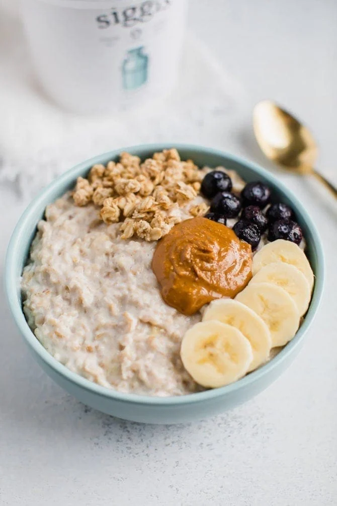

Overnight low-fat high-protein yogurt oatmeal

Description
in JUST 5 MINUTES make a simple high protein delicious breakfast for the next day.
Enjoy your mornings with an instant breakfast combined with juicy fresh fruit and healthy sweet homemade honey!
Ingredients
-
300 g Greek low fat yogurt 0.0%
-
1 scoop Whey protein
-
60g oatmeal
-
1 tbsp honey, OPTIONAL : fruits
Instructions
-
Add yogurt,oatmeal and whey in to a bowl
-
Mix and put in fridge overnightIf too dense: add milk/water
-
Pour over honey and optionally add sliced fruits
ENJOY!
Home